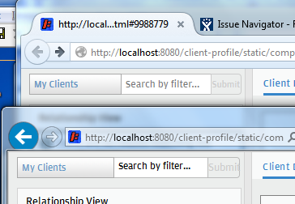
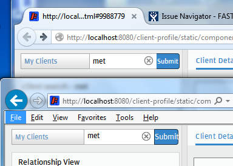

Slice 6px from each side and set two images that make up the borders. Set the top and bottom borders normally.
The width of the button turns too narrow, so pass 3% of the input box width to the submit button.
In order to leverage the space taken by the border images a small negative left margin in the button's <span> can be used.
disabled
The border color is #cccccc, the background is #eceeed.
The border color is #233545, the background is #3585ca.
Solved by setting a background image. There must be two: one for the disabled state and the other for the enabled state.
The images are traqnsparent except for the border.
The background images are generated using the Rounded Corner Image Generator:

{
background-image: url(stylesheets/compoDisabled3.png);
background-repeat: no-repeat;
background-position-x: right;
border-left: 1px solid #bbbbbb;
}
#cpa-search-submit {
/* border: 1px solid #233545; */
}
.cpa-search-disabledSubmit {
/* border: 0px solid #CCCCCC !important; */
}
